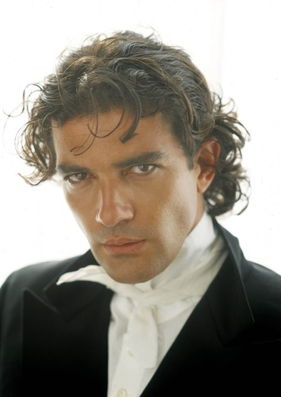

.jpg) The production team decided to switch up how Heathgliff was portrayed originally, and gave the role to Jacob Elordi instead, a Caucasion actor, to which fans accused the casting as, "white washing."
The production team decided to switch up how Heathgliff was portrayed originally, and gave the role to Jacob Elordi instead, a Caucasion actor, to which fans accused the casting as, "white washing."
Many fans of the original Wuthering Heights are upset by the casting of Jacob Elordi as Heathgliff in the movie. In the movie. Heathgliff is described as, "a 'dark-skinned gypsy" and "a little Lascar [a sailor from India or south-east Asia], or an American or Spanish castaway.'"
The production team decided to switch up how Heathgliff was portrayed originally, and gave the role to Jacob Elordi instead, a Caucasion actor, to which fans accused the casting as, "white washing."